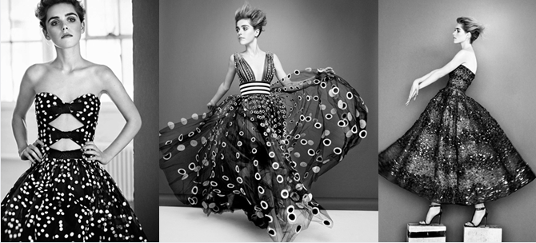
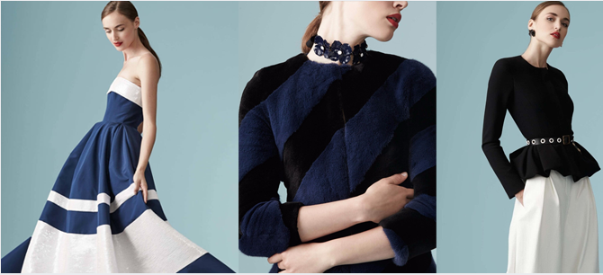
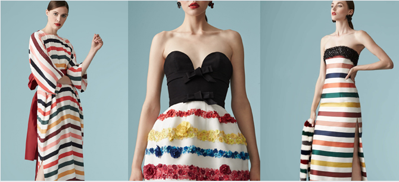

卡罗琳娜-海莱娜（Carolina Herrera），2008年CFDA Geoffrey Beene终身成就奖的得主，她的
“时尚总是变化的，”卡罗琳娜-海莱娜 (Carolina Herrera) 这样 说道，“但组成时尚的元素是不变的，精致、优雅
在她看来，现代的时尚已经有从单一刻板的简约主义风格转向更 加奢华、更富于装饰的趋势，而这也恰恰反应了卡罗琳娜-海莱 娜
此外，卡罗琳娜-海莱娜 (Carolina Herrera) 还荣获了诸多香水 设计奖，并获得2004年美国时装设计协会CFD